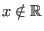
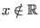
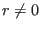
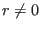
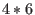
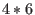

Next: Fields Up: Matrices and Analytic Geometry Previous: Some Mathematical Notation Contents Index
Most applications of mathematics involve the use of the real number
system. We define these
numbers as any number than can be expressed in
decimal notation. It is easier to give examples of such numbers
than to define them properly. For instance,

 , are
three examples of real numbers. (The
, are
three examples of real numbers. (The  means that the number could be
continued indefinitely.)
means that the number could be
continued indefinitely.)
We will use the symbol
 to mean the real number system. We will also use
the symbol
to mean the real number system. We will also use
the symbol  to show that a number is a member of a number system. So
to show that a number is a member of a number system. So
 would mean that
would mean that  is a real number. (Read this as
is a real number. (Read this as  in the reals).
To show that
in the reals).
To show that  is not a real number we write

.
is not a real number we write

.
There are other number systems. There is the set of integer
numbers,
, which we refer to with the symbol
 .1.1
There are the rational
numbers formed by the ratio of an integer
over a non-zero integer, like
.1.1
There are the rational
numbers formed by the ratio of an integer
over a non-zero integer, like
 or
or
 . We refer to these
numbers with the symbol
. We refer to these
numbers with the symbol
 .
.
There are other number systems, some of which we will introduce later. A natural question is why do we need different number systems? The simple answer is that problems we encounter are best handled by certain types of numbers. When we count people we don't need rational numbers. When we measure liquids, like liters of juice, we almost never need to introduce real numbers that are not ratios of integer numbers (rationals).
All the number systems which we will talk about obey certain laws of algebra. We will examine how these laws apply to the rational numbers.
We mentioned before that a rational number is a number of the form  where
where
 and
and  are integer numbers and 
(read
are integer numbers and 
(read  is not equal to zero).
There are two binary compositions that we normally use with the rational
numbers. These are addition and multiplication. That is, addition
and multiplication are operations where we combine two numbers (binary means two) to
create a third number (composition). We will use the symbol
is not equal to zero).
There are two binary compositions that we normally use with the rational
numbers. These are addition and multiplication. That is, addition
and multiplication are operations where we combine two numbers (binary means two) to
create a third number (composition). We will use the symbol  to mean addition.
We will use the symbol
to mean multiplication or no symbol at all when we are
using characters to represent numbers. For example,
to mean addition.
We will use the symbol
to mean multiplication or no symbol at all when we are
using characters to represent numbers. For example,  and
and  would mean the
same thing,
would mean the
same thing,  multiplied by
multiplied by  . Also
. Also  is
times
is
times  , but
, but  is not
is not
 , it is thirty-four.
, it is thirty-four.
We say that two rational numbers,  and
and  , are equal if
, are equal if  . In other
words, if
. In other
words, if  times
times  equals
equals  times
times  . Using this definition we know then
that
. Using this definition we know then
that
 because
because  equals 
.
equals 
.
A rational number is written either as  or
or
 . Here
. Here  is called the
numerator and
is called the
numerator and  is called the denominator. So for
,
is called the denominator. So for
,  would be the numerator and
would be the denominator.
would be the numerator and
would be the denominator.
Addition of two rationals is accomplished using the following formula:
Notice that the multiplication was done before the addition. This is the accepted order of operations. When doing arithmetic, multiplication is done before addition unless an operation (another word for composition) is surrounded by a pair of braces. For example:
A clearly superior method for calculating the result of binary operations is the postfix
notation. In postfix notation, two numbers or variables are followed by the operation symbol. An
expression such as  would be the same as
would be the same as  and
and  would be
would be  . All binary
operations, where two consecutive numbers or variables are immediately followed by an operation
symbol, are done first. The preceding example
would be written as
. All binary
operations, where two consecutive numbers or variables are immediately followed by an operation
symbol, are done first. The preceding example
would be written as
Although postfix notation removes the need for braces and memorizing orders of operations, it is not in common use as yet so we will reluctantly do without it in this text.
The sum notation has the same order of operations as a pair of braces so that

and that

Multiplication of rationals is much simpler than addition of rationals. We simply multiply the numerators and multiply the denominators.
Rationals are usually written in their lowest form. This means that we divide out the greatest common divisor. For instance:
Since
The two binary compositions we use with the rationals always produce another rational number. When this is true for some number system we say that the number system is closed under that binary composition. (We would say that the rationals are closed under addition or that the reals are closed under multiplication.)
We have made use of laws of algebra to accomplish the above calculation. We will now state the five essential algebraic laws for the rational numbers.